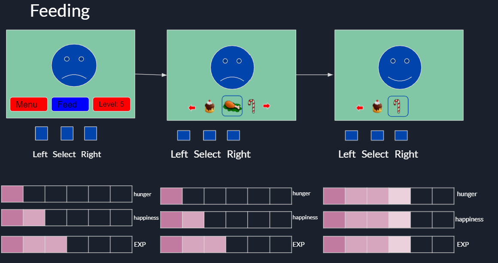
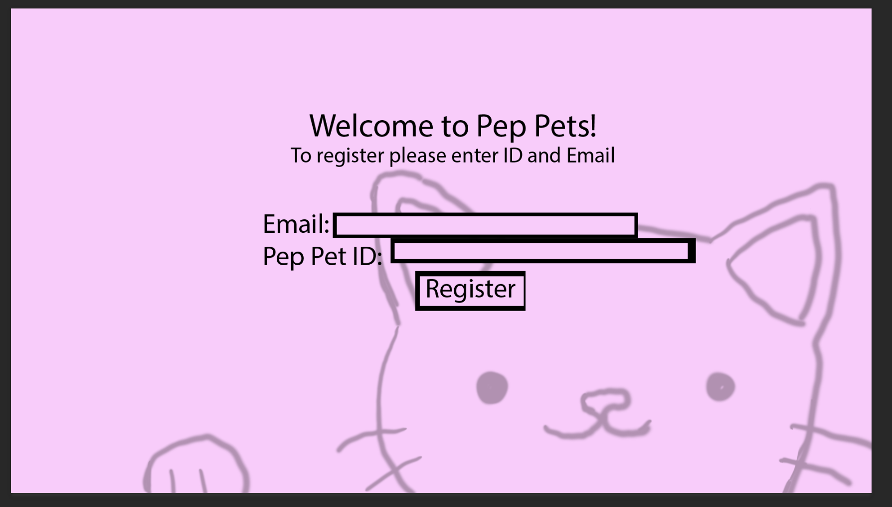

Pep Pet is a small hand held device similar to that of a tomagotchi. It houses a digital pet that you can take care of by becoming more active, attentive, and interactive with other users.
Makeshift phone that teaches children to become responsible of important belongings and one's others wellbeing.
Who is Peppets for ?
PepPets is for middle school children who do not have smart phones yet or dont have a pet but want to own one. Or are unable to own one because of where they live.
Parents who might be hesitant to shell out the money for a new phone with data plan can be costly might want to consider this as an option.
The same is true for a live animal, So we decided to solve these 2 issue with one small handheld device.
What can the Pep Pet do ?
Currently planned features of PetPets Include:
Pivoting
The pivot strategy that applies to our pivot is pivot strategy #4. The customer need pivot.
This is our pivot because as explained in our irukumi number 7, we are pivoting toward our customer needs.
We are adding a new custom parent made task feature to our website. The parent will be able to a write a short
message/task and select the reward for completing the task. This task will show up on the device, and the parent
will be the one to confirm completion.
We are making his pivot because we have gotten feedback that they dont want it just to be another thing to buy.
We hope to include some Interactivity between the parent device and children while at the same time addressing some
pain points of the parents.
Benefits vs Features of PepPets
Costs Of PetPets
Revenue Model
For our first year we expect be at most 10% successful of the original tomagotchi, so 40,000 units.
This product will be sold through all the traditional channels. This includes
Online (Such as Amazon, our own Website, and other toy sites.)
We expect most of our sales to be from here, around 80%, 32000 units, $1280000 gross, with net $606,720
Brick and mortar stores (Toys R us, department stores, malls)
The remaining sales would come from here, which is 20%, 8000 units, $320,000 gross,
with net $151,680
Product Interactions
One key interaction with the device is that when walking the player will be rewarded.
This will help with parents who want their child to be more physicaly active.
Another interaction is the device to device features which will help players bond with
each other, which will encourage them to interact with other children. Again be more active.
Feeding and caring for the pet will give them a sense of responsibility,
Product UI mock up

Here is a mock up of what the devices UI will ideally look like.
Below is the idea of our website that go along with the device to register the device.
Please note that this note represent final version of either device UI or

Our PepPet helps parents who want to teach their children responsibility by giving an alternative to phones or live pets and promote physical activity along with building social skills unlike cell phones that could lead potentially harmful things on the internet.